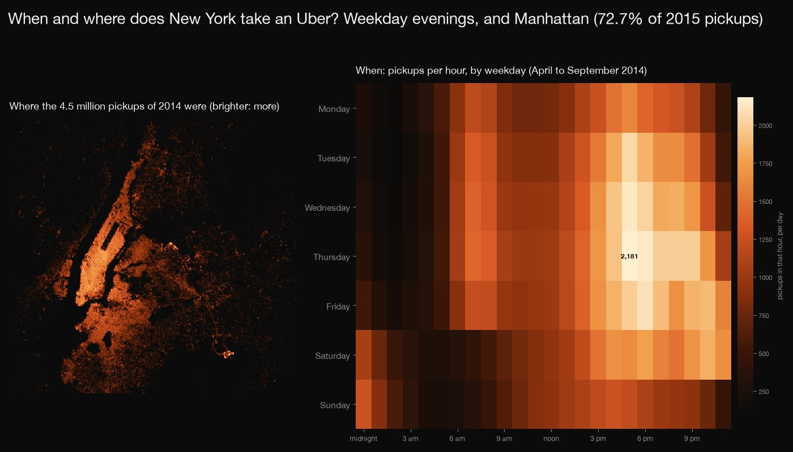
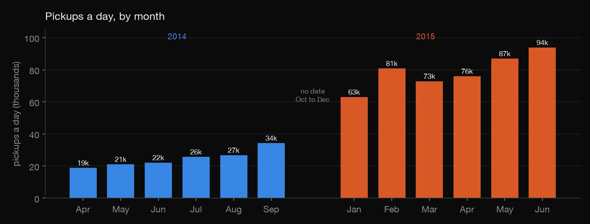
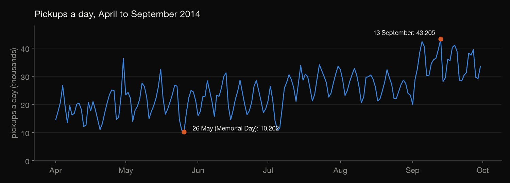
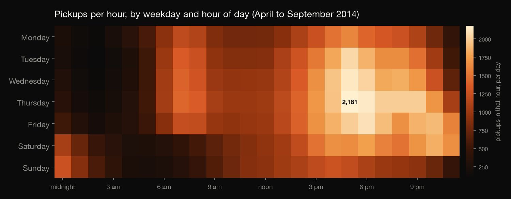
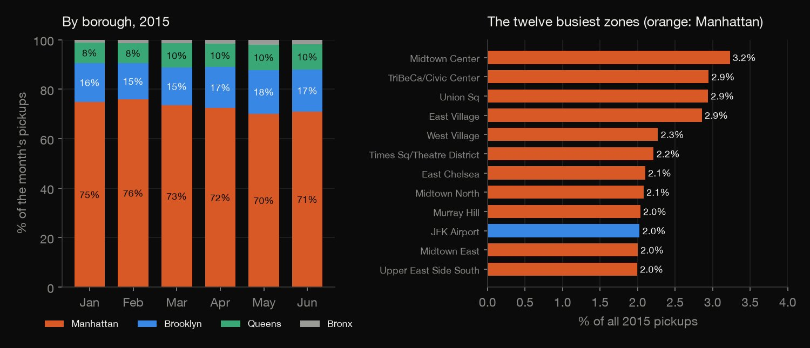

Python · Exploratory analysis · 2026-10
When and Where Does New York Take an Uber?
All 18.8 million pickups in FiveThirtyEight's New York Uber files, counted twice: the busiest hour is a Thursday at 5 pm (2,181 pickups an hour), 72.7% of 2015 pickups were in Manhattan (75.9% in February, 70.9% in June), and pickups a day grew 82% from April to September 2014 and 49% from January to June 2015.

Pickups only (no destinations or fares), and the files do not say whether they hold every Uber pickup. The two years cover different months and 5 bases against 8, so growth is measured within each file. Times are presumably local. Duplicate rows and pickups outside the city are kept. Source: FiveThirtyEight's uber-tlc-foil-response (data from the NYC TLC by public-records request); the repository states no licence, so only counts are published.
01 — The problem
The classic first look at ride-hailing data plots pickups by hour and shades a map. Do the files really say what they seem to, and are the patterns as clean as the charts suggest?
The task follows GeeksforGeeks' "Uber Trips Data Analysis" (pickups by hour, day and month, and on a map). The data is the real set of New York pickups that FiveThirtyEight obtained from the Taxi & Limousine Commission, not a course file.
02 — What I built
Every row counted, and then counted again:
- The audit: months, times, duplicates, places outside the city, bases and zones.
- When: pickups by weekday and hour, by day and by month.
- Where: a density map of 2014, and 2015 pickups by borough and taxi zone.
- Check:
check.pyreads all 18.8 million rows in plain Python and recounts every number: 2,111.
03 — How it was built
- 01
Download the files
FiveThirtyEight's
uber-tlc-foil-response, pinned to one commit: six 2014 files (4.5 million pickups, April to September), one zipped 2015 file (14.3 million, January to June) and the taxi zone lookup. None is committed (about 280 MB); the script keeps their checksums.BASE = "https://raw.githubusercontent.com/fivethirtyeight/uber-tlc-foil-response/c875c79a275179591eef062050faf77db1020563/uber-trip-data/" - 02
Audit the files
Each 2014 row is in its own month's file and on the minute; 82,581 rows are exact duplicates and are kept; 29,749 pickups fall outside a box around the five boroughs and are kept in the counts. In 2015 every zone id is in the lookup (which uses bare carriage returns as line endings).
outside = (U["Lat"] < BOX[0]) | (U["Lat"] > BOX[1]) | (U["Lon"] < BOX[2]) | (U["Lon"] > BOX[3]); add("2014 pickups outside the city box", int(outside.sum())) - 03
Count by weekday and hour
Pickups by weekday and hour of day, divided by the number of such weekdays in April to September 2014, so that "per day" is comparable across weekdays that occur 26 or 27 times.
hw = U.groupby(["wd", "hour"]).size().rename("pickups").reset_index(); hw["weekday"] = hw["wd"].map(dict(enumerate(WEEKDAYS))); hw["days"] = hw["wd"].map(days); hw["per_day"] = hw["pickups"] / hw["days"] - 04
Count by month, borough and zone
Pickups a day by month for each file, and for 2015 the borough and zone of every pickup through the lookup, as shares of the month's pickups.
m = V[["t", "locationID"]].merge(Lk, left_on="locationID", right_on="LocationID", how="left") - 05
Recount it by hand
check.pyreads every row of all seven files in plain Python, cuts the date and hour out of the text without a date parser, takes the weekday from the calendar, and recounts every number in the results.dpart, tpart = dt.split(" "); mo, dy, yr = (int(x) for x in dpart.split("/")); hh, mi, ss = (int(x) for x in tpart.split(":"))
04 — Results

A growing service, and a gap. Pickups a day rose from 18,817 in April 2014 to 34,271 in September (+82.1%), and from 63,026 in January 2015 to 93,897 in June (+49.0%). There is nothing for October to December 2014, and the 2014 files have 5 base codes against 8 in 2015, so the two years are not compared.

The files, and three oddities. 4,534,327 pickups in 2014 (April 564,516, May 652,435, June 663,844, July 796,121, August 829,275, September 1,028,136), each inside its own month's file and on the minute, and 14,270,479 in 2015, all with a zone in the lookup. Oddities: 82,581 exact duplicate rows in 2014 (1.8%), kept because many rides can start at one curb in one minute; 29,749 pickups outside a box around the five boroughs (0.66%), kept in the counts; and 6,264 2015 pickups in zones the lookup calls Unknown, with 162,195 having no affiliated base.
| Weekday, 2014 | A day | 5 pm | Midnight |
|---|---|---|---|
| Monday | 20,826 | 1,616 | 248 |
| Tuesday | 24,585 | 2,056 | 231 |
| Wednesday | 26,788 | 2,140 | 294 |
| Thursday | 29,044 | 2,181 | 357 |
| Friday | 28,505 | 1,999 | 528 |
| Saturday | 24,851 | 1,648 | 1,063 |
| Sunday | 18,853 | 1,212 | 1,265 |

When. Averaged over April to September 2014, Thursday is the busiest weekday (29,044 pickups a day) and Sunday the quietest (18,853). On weekdays the busiest hour is 17:00 to 18:00 with 1,999 pickups an hour, 6.2 times the 321 at 4 am; the busiest hour of the week is Thursday at 5 pm (2,181). The first hour of a Saturday and a Sunday, which is late Friday and Saturday night, has 1,063 and 1,265 pickups, against 294 on a Wednesday. The busiest single day was 13 September (Saturday, 43,205 pickups) and the quietest 26 May (Monday, Memorial Day, 10,202).
On the map Manhattan is the brightest, western Brooklyn and Queens next, and JFK and LaGuardia show as isolated bright spots; the grid of Manhattan's streets is visible.

Where, 2015. 72.7% of pickups were in Manhattan. Its share was 74.7% in January, 75.9% in February and 70.9% in June (lowest in May, 70.0%); Brooklyn went from 15.9% to 17.1%, Queens from 8.2% to 10.2%, the Bronx from 1.2% to 1.7%. The busiest zone is Midtown Center (3.2%); the ten busiest zones hold 24.7% of pickups, out of 262 zones with any. JFK Airport has 2.0% and LaGuardia 1.9%.
05 — What I'd do next
- Add the Lyft and other for-hire trips from the TLC's current open data, to see whether the weekday and hour pattern is Uber's or the city's.
- Join the daily counts to weather, to explain the busiest and quietest days instead of only reporting them.
- Draw the 2014 pickups on taxi-zone outlines, to put 2014 and 2015 on the same borough footing.